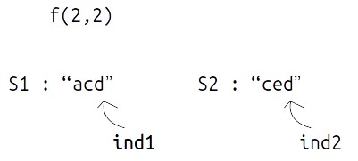

Problem Statement: Introduction to DP on Strings - Longest Common Subsequence
In the coming articles, we will discuss problems related to ‘Dynamic Programming on Strings’. We will discuss the problem of ‘Longest Common Subsequence’ in this article. Before proceeding further, let us understand what is the “Longest Common Subsequence”, or rather what is a “subsequence”?
A subsequence of a string is a list of characters of the string where some characters are deleted ( or not deleted at all) and they should be in the same order in the subsequence as in the original string.
For eg:
Strings like “cab”,” bc” will not be called as a subsequence of “abc” as the characters are not coming in the same order.
Note: For a string of length n, the number of subsequences will be 2n.
Now we will look at “Longest Common Subsequence”. The longest Common Subsequence is defined for two strings. It is the common subsequence that has the greatest length.
Examples

Disclaimer: Don’t jump directly to the solution, try it out yourself first.
Memoization Approach
Algorithm / Intuition
We are given two strings, S1, and S2 (suppose of same length n), the simplest approach will be to generate all the subsequences and store them, then manually find out the longest common subsequence.
This naive approach will give us the correct answer but to generate all the subsequences, we will require exponential ( 2n ) time. Therefore we will try some other approaches.
Using Dynamic Programming
We would want to try something that can give us the longest common subsequence on the way of generating all subsequences. To generate all subsequences we will use recursion and in the recursive logic we will figure out a way to solve this problem.
Steps to form the recursive solution:
We will first form the recursive solution by the three points mentioned in Dynamic Programming Introduction.
Step 1: Express the problem in terms of indexes.
We are given two strings S1 and S2:
A single variable can’t express both the strings at the same time, so we will use two variables ind1 and ind2. They mean that we are considering string S1 from index 0 ind1 and string S2 from index 0 to S2. So our recursive function will look like this:
Step 2: Explore all possibilities at a given index
Intuition for Recursive Logic
In the function f(ind1,ind2), ind1 and ind2 are representing two characters from strings S1 and S2 respectively. For example:

Now, there can be two possibilities,
- if(S1[ind1] == S2[ind2]) as in the figure below. In this case this common element will represent a unit length common subsequence, so we can say that we have found one character and we can shrink both the strings by 1 to find the longest common subsequence in the remaining pair of strings.
- if(S1[ind1] != S2[ind2]) as in the figure given below. In this case we know that the current characters represented by ind1 and ind 2 will be different. So, we need to compare the ind1 character with shrunk S2 and ind2 with shrunk S1. But how do we make this comparison ? If we make a single recursive call as we did above to f(ind1-1,ind2-1), we may lose some characters of the subsequence. Therefore we make two recursive calls: one to f(ind1,ind2-1) (shrinking only S1) and one to f(ind1-1,ind2) (shrinking only S2). Then when we return max of both the calls.
Step 3: Return the maximum of the choices
In the first case, we have only one choice but in the second case we have two choices, as we have to return the longest common subsequences, we will return the maximum of both the choices in the second case.
Base Case:
For a case like this:
As S1[ind1] != S2[ind2]
We will make a call to f(0-1,1), i.e f(-1,1) but a negative index simply means that there are no more indexes to be explored, so we simply return 0. Same is the case when S1[ind1]==S2[ind2]
- If (ind1<0 || ind2<0) return 0.
The final pseudocode after steps 1, 2, and 3:
Recursive Tree
We will dry run this example:
Steps to memoize a recursive solution:
As we see there are overlapping subproblems in the recursive tree, we can memorize the recursive code to reduce the time complexity.
- Create a dp array of size [N][M] where N and M are lengths of S1 and S2 respectively. It will store all the possible different states that our recursive function will take.
- We initialize the dp array to -1.
- Whenever we want to find the answer of particular parameters (say f(ind1,ind2)), we first check whether the answer is already calculated using the dp array(i.e dp[ind][ind2]!= -1 ). If yes, simply return the value from the dp array.
- If not, then we are finding the answer for the given value for the first time, we will use the recursive relation as usual but before returning from the function, we will set dp[ind][ind2] to the solution we get.
Code
#include <bits/stdc++.h>
using namespace std;
// Function to find the length of the Longest Common Subsequence (LCS)
int lcsUtil(string& s1, string& s2, int ind1, int ind2, vector<vector<int>>& dp) {
// Base case: If either string reaches the end, return 0
if (ind1 < 0 || ind2 < 0)
return 0;
// If the result for this pair of indices is already calculated, return it
if (dp[ind1][ind2] != -1)
return dp[ind1][ind2];
// If the characters at the current indices match, increment the LCS length
if (s1[ind1] == s2[ind2])
return dp[ind1][ind2] = 1 + lcsUtil(s1, s2, ind1 - 1, ind2 - 1, dp);
else
// If the characters don't match, consider two options: moving either left or up in the strings
return dp[ind1][ind2] = max(lcsUtil(s1, s2, ind1, ind2 - 1, dp), lcsUtil(s1, s2, ind1 - 1, ind2, dp));
}
// Function to calculate the length of the Longest Common Subsequence
int lcs(string s1, string s2) {
int n = s1.size();
int m = s2.size();
vector<vector<int>> dp(n, vector<int>(m, -1)); // Create a DP table
return lcsUtil(s1, s2, n - 1, m - 1, dp);
}
int main() {
string s1 = "acd";
string s2 = "ced";
// Call the function to find and output the length of the Longest Common Subsequence
cout << "The Length of Longest Common Subsequence is " << lcs(s1, s2) << endl;
return 0; // Return 0 to indicate successful program execution
}
import java.util.*;
class TUF {
// Recursive function to find the length of the Longest Common Subsequence (LCS)
static int lcsUtil(String s1, String s2, int ind1, int ind2, int[][] dp) {
// Base case: If either of the strings reaches the end, return 0
if (ind1 < 0 || ind2 < 0)
return 0;
// If the result for this subproblem has already been calculated, return it
if (dp[ind1][ind2] != -1)
return dp[ind1][ind2];
// If the characters at the current indices are the same, increment the LCS length
if (s1.charAt(ind1) == s2.charAt(ind2))
return dp[ind1][ind2] = 1 + lcsUtil(s1, s2, ind1 - 1, ind2 - 1, dp);
// If the characters are different, choose the maximum LCS length by either
// skipping a character in s1 or skipping a character in s2
else
return dp[ind1][ind2] = Math.max(lcsUtil(s1, s2, ind1, ind2 - 1, dp),
lcsUtil(s1, s2, ind1 - 1, ind2, dp));
}
// Function to find the length of the Longest Common Subsequence (LCS)
static int lcs(String s1, String s2) {
int n = s1.length();
int m = s2.length();
// Create a 2D array to store results of subproblems
int dp[][] = new int[n][m];
// Initialize the dp array with -1 to indicate that subproblems are not solved yet
for (int rows[] : dp)
Arrays.fill(rows, -1);
// Call the recursive function to find the LCS length
return lcsUtil(s1, s2, n - 1, m - 1, dp);
}
public static void main(String args[]) {
String s1 = "acd";
String s2 = "ced";
// Call the lcs function and print the result
System.out.println("The Length of Longest Common Subsequence is " + lcs(s1, s2));
}
}
def lcsUtil(s1, s2, ind1, ind2, dp):
# Base case: If either of the strings has reached the end
if ind1 < 0 or ind2 < 0:
return 0
# If the result for this state is already calculated, return it
if dp[ind1][ind2] != -1:
return dp[ind1][ind2]
# If the characters at the current indices match, include them in the LCS
if s1[ind1] == s2[ind2]:
dp[ind1][ind2] = 1 + lcsUtil(s1, s2, ind1 - 1, ind2 - 1, dp)
else:
# If the characters do not match, consider both possibilities:
# 1. Exclude character from s1 and continue matching in s2
# 2. Exclude character from s2 and continue matching in s1
dp[ind1][ind2] = max(lcsUtil(s1, s2, ind1, ind2 - 1, dp), lcsUtil(s1, s2, ind1 - 1, ind2, dp))
return dp[ind1][ind2]
def lcs(s1, s2):
n = len(s1)
m = len(s2)
dp = [[-1 for j in range(m)] for i in range(n)]
return lcsUtil(s1, s2, n - 1, m - 1, dp)
def main():
s1 = "acd"
s2 = "ced"
print("The Length of Longest Common Subsequence is", lcs(s1, s2))
if __name__ == '__main__':
main()
function lcs(s1, s2) {
const n = s1.length;
const m = s2.length;
// Create a 2D array 'dp' to store dynamic programming results, initialized with -1
const dp = Array.from({ length: n }, () => Array(m).fill(-1));
// Define a recursive utility function to calculate the LCS length
function lcsUtil(ind1, ind2) {
// Base case: If either string has reached the end, the LCS length is 0
if (ind1 < 0 || ind2 < 0) {
return 0;
}
// If the result for this combination of indices has already been calculated, return it
if (dp[ind1][ind2] !== -1) {
return dp[ind1][ind2];
}
// If the characters match, increase the LCS length and move both indices
if (s1[ind1] === s2[ind2]) {
return (dp[ind1][ind2] = 1 + lcsUtil(ind1 - 1, ind2 - 1));
} else {
// If the characters don't match, consider two options: moving one index in either string
return (dp[ind1][ind2] = Math.max(
lcsUtil(ind1, ind2 - 1),
lcsUtil(ind1 - 1, ind2)
));
}
}
// Call the recursive utility function to calculate the LCS length
return lcsUtil(n - 1, m - 1);
}
// Main function
function main() {
const s1 = "acd";
const s2 = "ced";
// Call the lcs function and print the result
console.log("The Length of Longest Common Subsequence is " + lcs(s1, s2));
}
// Call the main function to start the program
main();
Output: The Length of Longest Common Subsequence is 2
Complexity Analysis
Time Complexity: O(N*M)
Reason: There are N*M states therefore at max ‘N*M’ new problems will be solved.
Space Complexity: O(N*M) + O(N+M)
Reason: We are using an auxiliary recursion stack space(O(N+M)) (see the recursive tree, in the worst case, we will go till N+M calls at a time) and a 2D array ( O(N*M)).
Tabulation Approach
Algorithm / Intuition
To convert the memoization approach to a tabulation one, create a dp array with the same size as done in memoization.
Initialization: Shifting of indexes
In the recursive logic, we set the base case to if(ind1<0 || ind2<0) but we can’t set the dp array’s index to -1. Therefore a hack for this issue is to shift every index by 1 towards the right.
- Therefore, now the base case will be if(ind1==0 || ind2==0).
- Similarly, we will implement the recursive code by keeping in mind the shifting of indexes, therefore S1[ind1] will be converted to S1[ind1-1]. Same for others.
- At last we will print dp[N][M] as our answer.
Code
#include <bits/stdc++.h>
using namespace std;
// Function to find the length of the Longest Common Subsequence (LCS)
int lcs(string s1, string s2) {
int n = s1.size();
int m = s2.size();
vector<vector<int>> dp(n + 1, vector<int>(m + 1, -1)); // Create a DP table
// Initialize the base cases
for (int i = 0; i <= n; i++) {
dp[i][0] = 0;
}
for (int i = 0; i <= m; i++) {
dp[0][i] = 0;
}
// Fill in the DP table to calculate the length of LCS
for (int ind1 = 1; ind1 <= n; ind1++) {
for (int ind2 = 1; ind2 <= m; ind2++) {
if (s1[ind1 - 1] == s2[ind2 - 1])
dp[ind1][ind2] = 1 + dp[ind1 - 1][ind2 - 1]; // Characters match, increment LCS length
else
dp[ind1][ind2] = max(dp[ind1 - 1][ind2], dp[ind1][ind2 - 1]); // Characters don't match, consider the maximum from left or above
}
}
return dp[n][m]; // Return the length of the Longest Common Subsequence
}
int main() {
string s1 = "acd";
string s2 = "ced";
// Call the function to find and output the length of the Longest Common Subsequence
cout << "The Length of Longest Common Subsequence is " << lcs(s1, s2) << endl;
return 0; // Return 0 to indicate successful program execution
}
import java.util.*;
class TUF {
// Function to find the length of the Longest Common Subsequence (LCS)
static int lcs(String s1, String s2) {
int n = s1.length();
int m = s2.length();
// Create a 2D array to store results of subproblems
int dp[][] = new int[n + 1][m + 1];
// Initialize the dp array with -1 to indicate that subproblems are not solved yet
for (int rows[] : dp)
Arrays.fill(rows, -1);
// Initialize the first row and first column with zeros since LCS with an empty string is zero
for (int i = 0; i <= n; i++) {
dp[i][0] = 0;
}
for (int i = 0; i <= m; i++) {
dp[0][i] = 0;
}
// Fill the dp array using dynamic programming
for (int ind1 = 1; ind1 <= n; ind1++) {
for (int ind2 = 1; ind2 <= m; ind2++) {
// If the characters at the current indices are the same, increment the LCS length
if (s1.charAt(ind1 - 1) == s2.charAt(ind2 - 1))
dp[ind1][ind2] = 1 + dp[ind1 - 1][ind2 - 1];
// If the characters are different, choose the maximum LCS length by either
// excluding a character in s1 or excluding a character in s2
else
dp[ind1][ind2] = Math.max(dp[ind1 - 1][ind2], dp[ind1][ind2 - 1]);
}
}
return dp[n][m]; // Return the length of the Longest Common Subsequence (LCS)
}
public static void main(String args[]) {
String s1 = "acd";
String s2 = "ced";
// Call the lcs function and print the result
System.out.println("The Length of Longest Common Subsequence is " + lcs(s1, s2));
}
}
def lcs(s1, s2):
n = len(s1)
m = len(s2)
# Create a DP table of size (n+1) x (m+1) initialized with -1
dp = [[-1 for j in range(m + 1)] for i in range(n + 1)]
# Initialize the base cases:
# - The length of LCS with an empty string is 0, so dp[i][0] = 0 for all i
# - The length of LCS with an empty string is 0, so dp[0][j] = 0 for all j
for i in range(n + 1):
dp[i][0] = 0
for j in range(m + 1):
dp[0][j] = 0
# Fill in the DP table by considering characters from both strings
for ind1 in range(1, n + 1):
for ind2 in range(1, m + 1):
if s1[ind1 - 1] == s2[ind2 - 1]:
# If the characters match, increment the LCS length
dp[ind1][ind2] = 1 + dp[ind1 - 1][ind2 - 1]
else:
# If the characters do not match, take the maximum of
# LCS length without one character from s1 or s2
dp[ind1][ind2] = max(dp[ind1 - 1][ind2], dp[ind1][ind2 - 1])
# The value in dp[n][m] represents the length of the Longest Common Subsequence
return dp[n][m]
def main():
s1 = "acd"
s2 = "ced"
print("The Length of Longest Common Subsequence is", lcs(s1, s2))
if __name__ == "__main__":
main()
function lcs(s1, s2) {
const n = s1.length;
const m = s2.length;
// Create a 2D array 'dp' to store dynamic programming results, initialized with -1
const dp = Array.from({ length: n + 1 }, () => Array(m + 1).fill(-1));
// Initialize the base conditions for empty substrings
for (let i = 0; i <= n; i++) {
dp[i][0] = 0;
}
for (let i = 0; i <= m; i++) {
dp[0][i] = 0;
}
// Populating the 'dp' array using nested loops
for (let ind1 = 1; ind1 <= n; ind1++) {
for (let ind2 = 1; ind2 <= m; ind2++) {
if (s1[ind1 - 1] === s2[ind2 - 1]) {
dp[ind1][ind2] = 1 + dp[ind1 - 1][ind2 - 1];
} else {
dp[ind1][ind2] = Math.max(dp[ind1 - 1][ind2], dp[ind1][ind2 - 1]);
}
}
}
// The result is stored in the bottom-right cell of the 'dp' array
return dp[n][m];
}
// Main function
function main() {
const s1 = "acd";
const s2 = "ced";
// Call the lcs function and print the result
console.log("The Length of Longest Common Subsequence is " + lcs(s1, s2));
}
// Call the main function to start the program
main();
Output: The Length of Longest Common Subsequence is 2
Complexity Analysis
Time Complexity: O(N*M)
Reason: There are two nested loops
Space Complexity: O(N*M)
Reason: We are using an external array of size ‘N*M)’. Stack Space is eliminated.
Space Optimization Approach
Algorithm / Intuition
If we closely we are using two rows: dp[ind1-1][ ], dp[ind][ ],
So we are not required to contain an entire array, we can simply have two rows prev and cur where prev corresponds to dp[ind-1] and cur to dp[ind].
After declaring prev and cur, replace dp[ind-1] to prev and dp[ind] with cur and after the inner loop executes, we will set prev = cur, so that the cur row can serve as prev for the next index.
Code
#include <bits/stdc++.h>
using namespace std;
// Function to find the length of the Longest Common Subsequence (LCS)
int lcs(string s1, string s2) {
int n = s1.size();
int m = s2.size();
// Initialize two vectors to store the current and previous rows of the DP table
vector<int> prev(m + 1, 0), cur(m + 1, 0);
// Base case is covered as we have initialized the prev and cur vectors to 0.
for (int ind1 = 1; ind1 <= n; ind1++) {
for (int ind2 = 1; ind2 <= m; ind2++) {
if (s1[ind1 - 1] == s2[ind2 - 1])
cur[ind2] = 1 + prev[ind2 - 1]; // Characters match, increment LCS length
else
cur[ind2] = max(prev[ind2], cur[ind2 - 1]); // Characters don't match, consider the maximum from above or left
}
prev = cur; // Update the previous row with the current row
}
return prev[m]; // Return the length of the Longest Common Subsequence
}
int main() {
string s1 = "acd";
string s2 = "ced";
// Call the function to find and output the length of the Longest Common Subsequence
cout << "The Length of Longest Common Subsequence is " << lcs(s1, s2) << endl;
return 0; // Return 0 to indicate successful program execution
}
import java.util.*;
class TUF {
// Function to find the length of the Longest Common Subsequence (LCS)
static int lcs(String s1, String s2) {
int n = s1.length();
int m = s2.length();
// Create arrays to store the LCS lengths
int prev[] = new int[m + 1];
int cur[] = new int[m + 1];
// Iterate through the strings and calculate LCS lengths
for (int ind1 = 1; ind1 <= n; ind1++) {
for (int ind2 = 1; ind2 <= m; ind2++) {
// If the characters at the current indices are the same, increment the LCS length
if (s1.charAt(ind1 - 1) == s2.charAt(ind2 - 1))
cur[ind2] = 1 + prev[ind2 - 1];
// If the characters are different, choose the maximum LCS length by either
// excluding a character in s1 or excluding a character in s2
else
cur[ind2] = Math.max(prev[ind2], cur[ind2 - 1]);
}
// Update the 'prev' array to the values of 'cur' for the next iteration
prev = (int[]) (cur.clone());
}
return prev[m]; // Return the length of the Longest Common Subsequence (LCS)
}
public static void main(String args[]) {
String s1 = "acd";
String s2 = "ced";
// Call the lcs function and print the result
System.out.println("The Length of Longest Common Subsequence is " + lcs(s1, s2));
}
}
def lcs(s1, s2):
n = len(s1)
m = len(s2)
# Initialize two arrays, 'prev' and 'cur', to store the DP values
prev = [0] * (m + 1)
cur = [0] * (m + 1)
# Loop through the characters of both strings to compute LCS
for ind1 in range(1, n + 1):
for ind2 in range(1, m + 1):
if s1[ind1 - 1] == s2[ind2 - 1]:
# If the characters match, increment LCS length by 1
cur[ind2] = 1 + prev[ind2 - 1]
else:
# If the characters do not match, take the maximum of LCS
# by excluding one character from s1 or s2
cur[ind2] = max(prev[ind2], cur[ind2 - 1])
# Update 'prev' to be the same as 'cur' for the next iteration
prev = cur[:]
# The value in 'prev[m]' represents the length of the Longest Common Subsequence
return prev[m]
def main():
s1 = "acd"
s2 = "ced"
print("The Length of Longest Common Subsequence is", lcs(s1, s2))
if __name__ == '__main__':
main()
function lcs(s1, s2) {
const n = s1.length;
const m = s2.length;
// Initialize arrays 'prev' and 'cur' to store dynamic programming results, both initialized with 0
const prev = new Array(m + 1).fill(0);
const cur = new Array(m + 1).fill(0);
// Base case is already covered as 'prev' and 'cur' are initialized to 0.
// Populating the 'cur' array using nested loops
for (let ind1 = 1; ind1 <= n; ind1++) {
for (let ind2 = 1; ind2 <= m; ind2++) {
if (s1[ind1 - 1] === s2[ind2 - 1]) {
cur[ind2] = 1 + prev[ind2 - 1];
} else {
cur[ind2] = Math.max(prev[ind2], cur[ind2 - 1]);
}
}
// Update 'prev' with the values of 'cur' for the next iteration
prev.splice(0, m + 1, ...cur);
}
// The result is stored in the last element of the 'prev' array
return prev[m];
}
// Main function
function main() {
const s1 = "acd";
const s2 = "ced";
// Call the lcs function and print the result
console.log("The Length of Longest Common Subsequence is " + lcs(s1, s2));
}
// Call the main function to start the program
main();
Output:The Maximum price generated is 12
Complexity Analysis
Time Complexity: O(N*M)
Reason: There are two nested loops.
Space Complexity: O(M)
Reason: We are using an external array of size ‘M+1’ to store only two rows.
Video Explanation
Special thanks to Anshuman Sharma and Abhipsita Das for contributing to this article on takeUforward. If you also wish to share your knowledge with the takeUforward fam, please check out this article